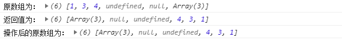
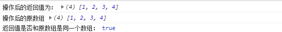
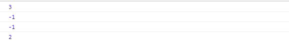
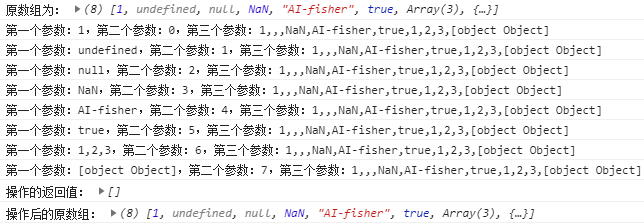

原文出处:本文由博客园博主AI-fisher提供。
原文连接:https://www.cnblogs.com/AI-fisher/p/11101855.html
原文连接:https://www.cnblogs.com/AI-fisher/p/11101855.html
数组——方法
之前简单介绍了数组的基本语法，因为其操作局限性，所以掌握好数组的各方法是很重要的。
ES5-
push()——原数组改变
参数：新增元素1，新增元素2。。。。。。
功能：在数组的末尾添加一个或更多元素
返回：新数组的长度
var arr = ["AI-fisher",true];
console.log("原数组：" , arr);
result = arr.push(1,"2",NaN);
console.log("操作后的原数组:" , arr);
console.log("操作的返回值:" , result);unshift()——原数组改变
参数：新增元素1，新增元素2。。。
功能：在数组的开头添加一个或更多元素
返回：新数组的长度
var arr = ["AI-fisher",true];
console.log("原数组：" , arr);
result = arr.unshift(1,"2",NaN);
console.log("操作后的原数组：" , arr);
console.log("操作的返回值：" , result);pop()——原数组改变
参数：无
功能：删除最后一个元素
返回：被删除的元素
var arr = ["AI-fisher",true,1,undefined,{},NaN,null,2];
console.log("原数组：" , arr);
result = arr.pop();
console.log("操作后的原数组：" , arr);
console.log("操作的返回值：", result);shift()——原数组改变
参数：无
功能：删除第一个元素
返回：被删除的元素
var arr = ["AI-fisher",true,1,undefined,{},NaN,null,2];
console.log("原数组：" , arr);
result = arr.shift();
console.log("操作后的原数组：" , arr);
console.log("操作的返回值：" , result);
splice()——原数组改变
参数：所有参数可选
功能：
（1）不传参数：无操作
var arr = ["AI-fisher",true,1,undefined,{},NaN,null];
console.log("原数组：" , arr);
result = arr.splice();
console.log("操作后的原数组：" , arr);
console.log("操作的返回值" , result);（2）传一个参数：表示从索引为这个参数的数据开始删除，直到数组结束
var arr = ["AI-fisher",true,1,undefined,{},NaN,null];
console.log("原数组：" , arr);
result = arr.splice(2);
console.log("操作后的原数组：" , arr);
console.log("操作的返回值" , result);（3）传两个参数：以第一个参数为索引开始删，往后总共删除第二个参数个
var arr = ["AI-fisher",true,1,undefined,{},NaN,null];
console.log("原数组：" , arr);
result = arr.splice(2,4);
console.log("操作后的原数组：" , arr);
console.log("操作的返回值" , result);（4）三个及以上：在两个参数的操作基础上，将第三个参数或第三个及之后的所有参数新增到开始删除的位置处，相当于选取一些元素用指定元素来替换。特别地，当第二个参数为0时，相当于在开始删除的位置新增元素
var arr = ["AI-fisher",true,1,undefined,{},NaN,null];
console.log("原数组：" , arr);
console.log("第一次操作的返回值：" , arr.splice(2,4,"abc")); //替换
console.log("第一次操作后的原数组：" , arr);
console.log("第二次操作的返回值：" , arr.splice(2,0,"1111",2222,NaN)); //新增
console.log("第二次操作后的原数组：" , arr);返回：删除的元素组成的数组
sort()——原数组改变
参数：所有参数可选
功能：
（1）不传参数：按字符的排序规则（逐位比较），从小到大排列
var arr = [5,207,23,4,1970,6,9,7];
console.log("原数组：" ,arr);
result = arr.sort();
console.log("操作的返回值：" , result);
console.log("操作后的原数组" , arr);
（2）传一个参数：参数为回调函数function(a,b){函数体}，a 代表每一次执行匿名函数时，找到的数组中的当前项；b 代表当前项的后一项；
①函数体为return a-b;时，表示升序
var arr = [5,207,23,4,1970,6,9,7];
console.log("原数组：" ,arr);
result = arr.sort(function(a,b){
return a-b;
});
console.log("操作的返回值：" , result);
console.log("操作后的原数组" , arr); ②函数体为return b-a;时，表示降序
var arr = [5,207,23,4,1970,6,9,7];
console.log("原数组：" ,arr);
result = arr.sort(function(a,b){
return b-a;
});
console.log("操作的返回值：" , result);
console.log("操作后的原数组" , arr);reverse()——原数组改变
参数：无
功能：颠倒数组中元素的顺序。
返回：新数组
var arr = [1,3,4,undefined,null,[3,1,5]];
console.log("原数组为：" , arr);
console.log("返回值为：" , arr.reverse());
console.log("操作后的原数组为：" , arr);
----------------------------------------------------------------------------------------------------------------------------
concat()——原数组不变
参数：concat(data1,data2,...)所有参数可选
功能：
（1）不传参数：返回一个新数组，其中的元素不变
var arr1 = [3,4,5];
console.log("原数组为：" , arr1);
var arr2 = arr1.concat();
console.log("操作后的原数组为：" , arr1);
console.log("操作的返回值：" , arr2);
console.log("arr1和arr2是否相等？" , arr1==arr2);（2）传一个或多个参数：当参数为非数组时，直接添加到数组中；当参数为数组时，直接将数组内的元素添加到数组中。
var arr1 = [3,4,5];console.log("原数组为：" , arr1);var arr2 = arr1.concat("1",undefined,NaN,null,1,{a:"admin"},["a","b","c"]);console.log("操作后的原数组为：" , arr1);console.log("操作返回的新数组为：" , arr2);返回：操作后的新数组
join()——原数组不变
参数：join(str)所有参数可选
功能：根据指定的分隔符将数组中的所有元素放入一个字符串
（1）不传入参数：参数默认为“,”
var arr = [4,5,6];
console.log("原数组为：" , arr);
str = arr.join();
console.log("操作后的原数组：" ,arr);
console.log("操作的返回值：" , str);
console.log("操作的返回值的类型：" + typeof str);
（2）传入一个参数：用这个参数作为分隔符
var arr = [4,5,6];
console.log("原数组为：" , arr);
str = arr.join(1);
console.log("第一次操作后的原数组：" ,arr);
console.log("第一次操作的返回值：" , str);
console.log("第二次操作的返回值:" , arr.join("-"));
console.log("第三次操作的返回值:" , arr.join("~"));
console.log("第一次操作的返回值的类型：" + typeof str);返回：被删除的元素
toString()——原数组不变
参数：无
功能：转换成字符串，类似于没有参数的join()。该方法会在数据发生隐式类型转换时被自动调用，如果手动调用，就是直接转为字符串。
返回：字符串
var arr = [1,2,3,4];
console.log("原类型为：" , typeof arr);
result = arr.toString();
console.log("操作后的返回值为：" , result);
console.log("操作后的原数组" , arr);
console.log("操作后的类型为：" , typeof result);slice()——原数组不变
参数：slice(startIndex, endIndex)（不传参无操作）
功能：正数代表从前往后数的索引值（从0开始），负数代表从后往前数的索引值（从-1开始）
（1）传入一个参数：将这个参数作为开始的索引值，从这一位开始向后截取剩下所有的元素
var arr = [1,3,4,undefined,null,[3,1,5]];
console.log("原数组为：" , arr);
console.log("返回值为：" , arr.slice(1));
console.log("返回值为：" , arr.slice(-1));
console.log("操作后的原数组为：" , arr);（2）传入两个参数：和传一个参数的区别就是，指定了截取到的范围，是第二个索引值对应的元素的前一个。
var arr = [1,3,4,undefined,null,[3,1,5]];
console.log("原数组为：" , arr);
console.log("返回值为：" , arr.slice(1,3));
console.log("返回值为：" , arr.slice(-3,-1));
console.log("操作后的原数组为：" , arr);返回：截取到的元素组成的数组
valueOf()——原数组不变
参数：无
功能：转换成字符串，类似于没有参数的join()。该方法会在数据发生隐式类型转换时被自动调用，如果手动调用，就是直接转为字符串。
返回：原数组
var arr = [1,2,3,4];
var result = arr.valueOf();
console.log("操作后的返回值为：" , result);
console.log("操作后的原数组" , arr);
console.log("返回值是否和原数组是同一个数组：" , result === arr);
ES5
indexof()——原数组不改变
参数：至少传一个参数
功能：根据指定的数据，从左向右，查询在数组中出现的位置。
（1）传一个参数：查询该参数在数组中的位置
let arr = ["h","e","l","l","o"];
console.log("该元素的索引值为：" + arr.indexOf("l"));（2）传两个参数：从第二个参数的位置开始查询，若第二个参数为正，则从左往右，若第二个参数为负，则从右往左数
let arr = ["h","e","l","l","o"];
console.log(arr.indexOf("l",3));
console.log(arr.indexOf("l",4));
console.log(arr.indexOf("l",-1));
console.log(arr.indexOf("l",-3));
返回：元素存在则返回其索引值（如果查询到多个，则返回第一个检索到的元素的索引），不存在返回-1
lastIndexof()——原数组不改变
和indexOf类似，只不过是从右往左查询
forEach()——原数组不改变
参数：含有三个参数的回调函数(value,index,self)，这三个值分别代表了值，索引，和数组自身
功能：遍历数组的同时获取数组中每个数据和其索引
返回：无返回值
let arr = [1,undefined,null,NaN,"AI-fisher",true,[1,2,3],{name:"AI-fisher"}];
console.log("原数组为：" , arr);
let result = arr.forEach(function(value,index,self){
console.log(`第一个参数：${value}，第二个参数：${index}，第三个参数：${self}`);
});
console.log("操作的返回值：" , result);
console.log("操作后的原数组：" , arr);map()——原数组不改变
参数：含有三个参数的回调函数(value,index,self)
功能：
（1）同forEach()
let arr = [1,undefined,null,NaN,"AI-fisher",true,[1,2,3],{name:"AI-fisher"}];
console.log("原数组为：" , arr);
let result = arr.map(function(value,index,self){
console.log(`第一个参数：${value}，第二个参数：${index}，第三个参数：${self}`);
});
console.log("操作的返回值：" , result);
console.log("操作后的原数组：" , arr);（2）每次回调函数的返回值被map组成新数组返回
let arr = [1,undefined,null,NaN,"AI-fisher",true,[1,2,3],{name:"AI-fisher"}];
console.log("原数组为：" , arr);
let result = arr.map(function(value,index,self){
return `blog${value}`;
});
console.log("操作的返回值：" , result);
console.log("操作后的原数组：" , arr);
返回：将回调函数处理的数据，返回到一个新数组中
filter()——原数组不改变
参数：含有三个参数的回调函数(value,index,self)
功能：
（1）同forEach()
let arr = [1,undefined,null,NaN,"AI-fisher",true,[1,2,3],{name:"AI-fisher"}];
console.log("原数组为：" , arr);
let result = arr.filter(function(value,index,self){
console.log(`第一个参数：${value}，第二个参数：${index}，第三个参数：${self}`);
});
console.log("操作的返回值：" , result);
console.log("操作后的原数组：" , arr);
（2）当回调函数的返回值为true时，本次的数组值返回给filter，被filter组成新数组返回,，比如用长度来过滤（当然要注意其中的值要有长度这个属性，不然的话要么报错要么不会被选择，像undefined和null就会报错，而数值和布尔之类的并没有数值这个属性，所以肯定不会被选择）
var arr = [12345,NaN,"AI-fisher",true,[1,2,3,4],{name:"AI-fisher"}];
console.log("原数组为：" , arr);
let result = arr.filter(function(value,index,self){
return value.length > 3;
});
console.log("操作的返回值：" , result);
console.log("操作后的原数组：" , arr);返回：将回调函数返回true时拿到的value放在新数组中查询符合条件的元素（过滤）
本篇方法总结参考自博客：https://www.jianshu.com/p/7e160067a06c